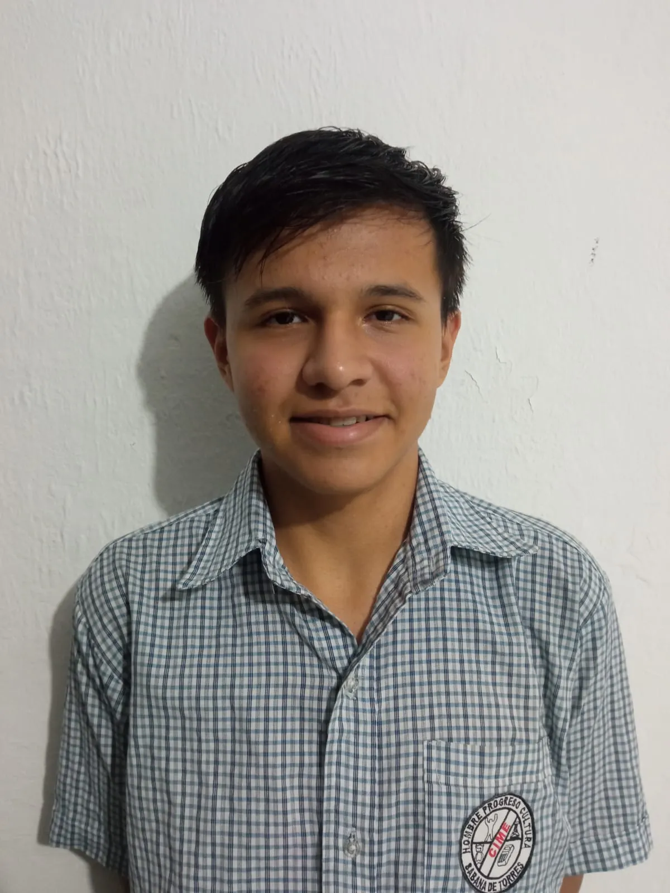

Informacion Personal
Gerson Chaparro
Calle 61a 46 27
gersonchaparro martinez@gmail.com
https://github.com/Gersonchm1
Certificados

Informacion Academica
Soy bachiller comercial graduado
del colegio nuestra señora de la esperanza en
sabana de torres santader, el año pasado culmine
el bachiderato y ahora me encuentro estudiando desarrollo
de sofware en campuslands
Habilidades
*soy bueno solucionando problemas
*Tengo un rapido apredizaje rapido
*Soy muy bueno entablando relaciones con
nuevos compañeros de trabajo
*Soy muy persistente en mis trabajos
*soy muy flexible alos problemas que vayan surgiendo
Proyectos personales
Proyecto Python: Hice un programa que simula
una plataforma de estudiantes,que tenia el
propositito facilitarle tareas a profesores y estudiantes
Stack Tecnologico
Python: Intermedi
Scrum: Intermedio
github: Intermedio
css: Principiante
Logros
*Logre conseguir graduarme de bachiller
tecnico comercial
*actualmente stoy estudiando en campuslands
Contactos
Gerson Chaparro
gersonchaparro@gmail.com
3014356697